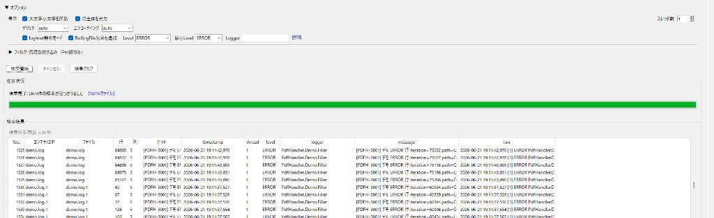

ZipSearch
log4net の過去ログを、ZIP のまま、複数ファイル横断で、ERROR と時刻で絞り込む。INI / JSON / key=value も表形式に展開して横断検索。
ZIP・ローカル・HTTP(S) 上のログや CSV、構造化ファイルを、展開せずに横断検索できる Windows 向けツール。保守・障害調査・納品ログ確認に特化しています。最新評価版では UI の 2 ペイン化・起動安定化に加え、日本語検索の改善、検索プロファイル、INI/JSON 構造化の Pro 化などを反映しています。
ZipSearch が向いていること
- 障害発生の前後を、ERROR / WARN と日時で素早く絞り込みたい
- .NET アプリの log4net ログを、Level / Logger ごとに構造化して探したい
- RollingFile（
app.log+app.log.1等）をまとめて追跡したい - ZIP に封入されたログを、解凍せずに検索したい（ZIP 内の多層フォルダも再帰検索）
- エラーごとに出力される INI / JSON / key=value ファイルを、表形式にまとめて横断検索したい
- HTTP(S) 上の ZIP ログを、URL 指定で直接調べたい
- 調査結果を CSV / JSON で共有し、CLI で再現したい
4 つの強み
1. アーカイブ横断 — ZIP / HTTP を非展開で
納品ログ・保管アーカイブ・社内共有フォルダ上の ZIP を、展開作業なしで横断検索。ZIP 内の多層フォルダもサブフォルダ再帰検索で対象にできます（v0.5.2）。HTTP(S) URL からの ZIP 直接検索にも対応。
2. log4net 構造化 — Pro 版
PatternLayout を 日時・Level・Logger・メッセージの列に分解。ERROR / WARN 絞り込み、スタックトレースを 1 件として検索、Logger ワイルドカードに対応。
3. 構造化ファイル検索 — INI / JSON / KV
.ini / .json / key=value 形式（拡張子が .txt / .log でも自動判定）を表形式に展開して横断検索（Pro）。ヒットしたセクションの全 KV を 1 行にまとめて確認できます。
4. 調査ワークフロー — GUI / CLI / Web
GUI で日常調査（ドラッグ＆ドロップでパス追加）、CLI でスクリプト化、Web で軽量ブラウズ。Rolling 兄弟の一括検索、エクスポート、お気に入りパス保存で 再現可能な調査を支援。
どんな調査に向いているか
| やりたいこと | ZipSearch |
|---|---|
| 過去ログを log4net の Level / Logger で絞る | 向いています（Pro） |
| ZIP ログを展開せず横断検索 | 向いています |
| 社内 URL の ZIP ログを直接調べる | 向いています |
| ローテーション済み .log を一括追跡 | 向いています（Pro） |
| ZIP / フォルダ内の多層サブフォルダをまとめて検索 | 向いています（v0.5.2） |
| INI / JSON / key=value ファイルを表形式に横断検索 | 向いています（v0.5.2） |
| 調査結果を CSV / JSON で共有・CLI 再現 | 向いています（Pro） |
| 稼働中アプリの常時リアルタイム監視 | 対象外（出力済みログの調査向け） |
| 巨大 1 ファイルの精読・編集 | 対象外（横断・絞り込み調査向け） |
機能一覧
- 3 つの UI: GUI / CLI / WebUI（スタートメニュー「ZipSearch」から起動）
- 対応形式: ZIP, 7z, CSV, TSV, TXT,
.log,.ini,.json, Excel（.xlsx / .xlsm・Pro） - サブフォルダ再帰（Pro）: ローカルフォルダ配下・ZIP 内の下のフォルダまで検索。Free は直下のみ
- 構造化検索（Pro）: INI / JSON /
key=valueを section / key / value 列に展開。全 KV 統合表示 - ドラッグ＆ドロップ（GUI）: ファイル / フォルダを検索パスへ追加（Free / Pro）
- 前回値・検索プロファイル（v0.5.3）: 条件の自動復元と名前付きプロファイル
- HTTP/HTTPS: ZIP の直接検索、フォルダ URL からの ZIP 一覧取得
- log4net 解析（Pro）: 列化、Level / Logger フィルタ、マルチライン例外
- Rolling 兄弟横断（Pro）:
app.logと.log.1等を一括 - エクスポート（Pro）: CSV / JSON
- 並列検索（Pro）: マルチスレッド
- サンプル同梱: log4net デモログ、多層フォルダ + KV ログ（インストーラ同梱）
メイン画面（GUI）
ZIP パス・HTTP URL・キーワード・オプションを一画面で設定。非展開横断検索の起点。

log4net 解析 + 検索結果
log4net 解析モード ON、Level を ERROR に絞り込み。timestamp / level / logger / message 列で構造化表示（Pro）。

Rolling 兄弟横断
RollingFile 兄弟通知 ON で demo.log と demo.log.1 等を一括検索。ローテーション済みログの追跡に（Pro）。

※ 1 枚目（検索設定画面）は正式リリース時に ZIP / HTTP URL 設定のキャプチャへ差し替え予定です。
ダウンロード
v0.5.4（評価版・DEV）
GitHub Releases の ページ下部「Assets」 から Windows 版をダウンロードしてください。上部の「Source code (zip)」はインストーラではありません。本配布は評価版（DEV ビルド）です。購入・決済導線は無効です。
うまくいかないとき（セキュリティでブロックされる場合）
ブラウザや Windows のセキュリティ警告（SmartScreen 等）で .exe のダウンロードや実行ができない 場合は、ZIP 版をお試しください。
方法 A（推奨）: Assets から ZipSearch-0.5.4-dev-setup.zip をダウンロード → 解凍 → 中の setup.exe を実行
方法 B: Assets から ZipSearch-0.5.4-win-x64.zip（ポータブル版）をダウンロード → 解凍 → ZipSearch-GUI.exe を起動（インストール不要）
フリー版 vs Pro 版
| 項目 | フリー版 | Pro 版 |
|---|---|---|
| ファイルサイズ | 10 MB/ファイルまで | 無制限 |
| 同時検索 | 最大 5 ファイル | 無制限 |
| 検索結果 | 最大 10 件 | 無制限 |
| log4net ログ解析 | ❌（.log 行検索のみ） |
✅ PatternLayout 列解析 |
| 構造化検索（INI/JSON/KV） | ❌（行検索にフォールバック） | ✅ |
| サブフォルダ再帰（フォルダ／ZIP） | ❌（直下のみ） | ✅ |
| ドラッグ＆ドロップ | ✅ | ✅ |
| ZIP / HTTP 横断 | ✅ | ✅ |
| エクスポート | ❌ | ✅ CSV/JSON |
| 並列検索 | 1 スレッド | マルチスレッド |
| 端末数 | — | 1 ライセンス 1 台 |
| 価格 | 無料 | 9,980 円（税込・買い切り） |
| 購入方法 | — | 評価版はサポート窓口経由（本リリースは決済導線なし） |
Pro 版は 9,980 円（税込・買い切り）を予定しています。現行の評価版（DEV ビルド）では購入・決済導線は無効です。14 日間の Pro 評価キーはサポート窓口経由で配布しています。
※当方は消費税法上の免税事業者のため、表示価格はお支払い総額（税込）であり、消費税を別途請求することはありません。法人向けの複数ライセンスは、サポート窓口へお問い合わせください。
FAQ
- Q. リアルタイムでログを受信・監視できますか？
- A. できません。ZipSearch はファイル・ZIP・アーカイブ上に出力済みのログを検索するツールです。
- Q. 単純な文字列検索だけなら足りますか？
- A. 場合によっては他の方法でも足ります。log4net の列化、ZIP 内非展開、HTTP ZIP、Rolling 一括、エクスポートなど、構造化されたログ調査に向いています。
- Q. INI や key=value 形式のファイルも検索できますか？
- A. v0.5.2 から対応し、v0.5.3 では Pro 限定です。
.ini/.jsonに加え、中身がkey=value形式の.txt/.logも自動判定して表形式に展開できます。Free 版では通常の行検索になります。 - Q. 無料版で何が試せますか？
- A. 10 MB までの ZIP / ログ横断検索、ドラッグ＆ドロップ（log4net 列解析・INI/JSON 表形式・サブフォルダ再帰・エクスポートは Pro）。お試し後、本格的な調査は Pro をご検討ください。
お問い合わせ
ご質問やサポートのご要望は、以下のメールアドレスまでお気軽にご連絡ください。
support@office-goplan.comご要望・不具合報告は Google フォーム からもお送りいただけます。